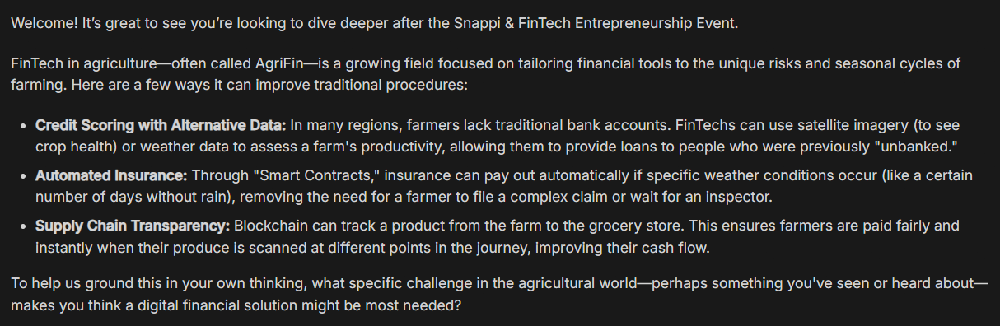
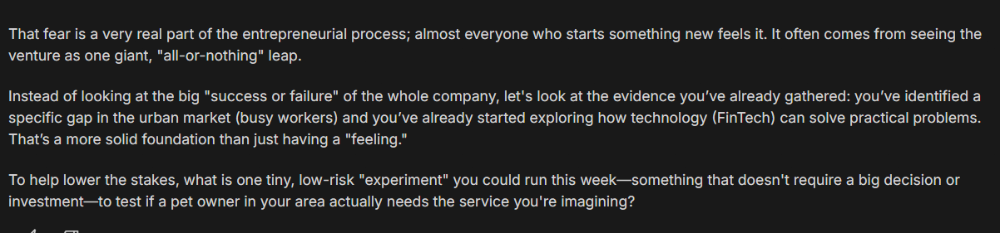
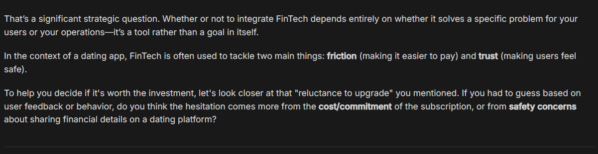

← Back to Snappi & FinTech Learning Ecosystem
AI Reflection Coach
An AI-powered performance support and coaching system designed to extend learning beyond the Snappi & FinTech Entrepreneurship Event by helping participants reflect on their experience, strengthen entrepreneurial confidence, and transfer what they learned into real entrepreneurial practice.
Project snapshot
The design rationale reviewed here is v1.0 (July 2026), authored under the role of Learning Experience Designer / Instructional Designer. The build brief and iteration log that follow document how that rationale was translated into a working prototype and tested.
Why this needed to exist
The learning problem
Entrepreneurship events are good at generating enthusiasm and introducing new ideas.
But participants often return to everyday life without any structured way to consolidate what they learned, evaluate the decisions they're making, or apply event concepts to real entrepreneurial situations.
Without that follow-through, a genuinely valuable learning experience risks staying an isolated event rather than becoming lasting behavioural change.
Why post-event support was needed
The decision to place the AI after the event, rather than folding it into the event itself, was deliberate.
Entrepreneurship is treated here as something that develops through experience, reflection, and application — not through information delivery alone. That means the moments where support matters most are the ones that happen after the event: when participants are actually making decisions, facing uncertainty, and experimenting with ideas in the real world.
Positioning the AI after the event, rather than as an add-on during it, is the single decision the whole project pivots around — it reframes the AI's job from "reinforcing content" to "supporting behaviour change in context."
Why performance support was selected
The instructional problem wasn't "how do we teach more" — it was "how do we make sure the teaching that already happened doesn't evaporate."
That's a performance support problem, not a content problem. Support needed to be available at the point of need — embedded in the entrepreneur's actual activity — rather than delivered as a separate learning module disconnected from it.
Why AI was an appropriate solution
AI made this kind of point-of-need, ongoing support practical in a way a facilitator-led follow-up couldn't be: available continuously, responsive to each individual's specific situation, and low-friction enough to use in the moment uncertainty actually shows up.
But the framework is explicit that AI's role here is to strengthen human thinking, not substitute for it — it collaborates with the learner rather than generating entrepreneurial solutions on their behalf.
What success looks like
The central objective is to cultivate reflective, confident, and independent entrepreneurs — not to build an AI that entrepreneurs come to depend on.
That goal breaks down into several connected instructional aims:
- Reflection — helping learners revisit entrepreneurial experiences, recognise patterns in their own thinking, and evaluate decisions using observable evidence rather than intuition alone.
- Confidence — building entrepreneurial self-efficacy through authentic achievement and evidence of real progress, not generic encouragement.
- Learner ownership — treating participants as the entrepreneur and the AI as the coach. Every design decision protects the learner's role as the author of their own decisions.
- Entrepreneurial thinking — cultivating independent thinking rather than dependence on AI-generated answers; the AI is meant to be a facilitator of thinking, not the source of it.
- Transfer — making sure reflection doesn't stay theoretical. Insight is only considered valuable once it changes what the learner does next.
The AI succeeds when learners increasingly no longer need it.
Success is explicitly not measured by how often learners use the AI. That's an unusual success metric to design toward, and it shapes almost every behavioural rule that follows — from the conversational architecture through to how the prototype was later evaluated.
Who this was designed for
Target audience
Adults aged 18–28 participating in the Snappi & FinTech Entrepreneurship Event. As a group, they share an interest in innovation and entrepreneurship, but they differ meaningfully in prior experience, confidence, motivation, and entrepreneurial aspiration.
Learner personas
Three personas were used to keep the coaching design adaptable without fragmenting the underlying instructional philosophy:
| Persona | Description |
|---|---|
| The Aspiring Entrepreneur | Motivated to develop and eventually launch entrepreneurial ideas. |
| The Curious Individual | Interested in understanding entrepreneurship without immediate intentions of creating a business. |
| The Tech Enthusiast | Attracted by technological innovation, digital products, and the evolving FinTech ecosystem. |
Learner needs
Across these personas, the underlying need is consistent: a way to process real entrepreneurial experience after the event ends, without losing ownership of the thinking to an external "expert" — human or AI.
Instructional implications
Because the personas vary in confidence and prior experience but share the same core need, the coaching conversations were designed to stay adaptable in tone and pacing while preserving one consistent instructional philosophy underneath.
The AI doesn't shift its underlying role (facilitator, not expert) from persona to persona — it adapts how it supports reflection, not whether it does.
The beliefs behind the design
The instructional philosophy behind the AI Reflection Coach can be summarized in one line from the source framework:
I believe instructional design should create learning experiences that help people think more independently, reflect more deeply, and perform more confidently until they no longer require instructional support.
That belief shapes the whole conversational design, and it rests on a few connected convictions:
Learning is active, not delivered.
People learn by engaging with experience — recognising patterns, questioning assumptions, connecting new ideas to what they already know — not by receiving information passively. This is why the AI's job is to create opportunities for reflection and experimentation rather than to explain concepts.
AI should extend human thinking, not replace it.
The AI is not positioned as the entrepreneur, the expert, or the decision-maker. It organises ideas, asks questions, and helps learners recognise their own reasoning — but the learner remains the author of every entrepreneurial decision.
Entrepreneurship develops through experience.
Real entrepreneurial situations require learners to make decisions under uncertainty, evaluate outcomes, and adapt — which is exactly why the coach lives after the event rather than during it.
Reflection creates growth, and it has to come before explanation.
Successes and failures are treated as equally valuable — both reveal patterns worth examining. The framework is direct about the ordering: reflection always precedes explanation.
Confidence is built on evidence, not reassurance.
Sustainable confidence comes from learners recognising their own authentic progress, not from external praise that isn't tied to anything they actually did.
Technology should stay in the background.
The AI's success is measured by the learner's growing independence, not by the sophistication of its own responses.
This philosophy is what rules out a common but weaker design pattern for AI coaching tools — the "helpful assistant that answers questions well." Here, an AI that answers well but too quickly would actually be failing its instructional purpose, because it would be short-circuiting the reflection the whole system exists to protect.
Five principles, five theories
The framework translates the design philosophy into five concrete instructional design principles, each tied to a specific design question and a supporting theory.
Principle 1
Learner Ownership Before AI Authority
Design question: Who are the learners?
Learners are treated as capable adults who bring real experience and perspective into the process — not as blank slates needing instruction. The AI's job is to create space for independent thinking and decision-making, not to assume ignorance or dictate a path.
Malcolm Knowles — AndragogyThe learner remains the entrepreneur; the AI remains the coach.
Principle 2
AI as a Collaborative Thinking Partner
Design question: Why use AI?
AI's purpose here is not to generate entrepreneurial solutions but to enhance the learner's own thinking process — organising ideas, encouraging reflection, and expanding perspective while human judgement stays in charge.
Ethan Mollick — AI as a Collaborative PartnerThe AI contributes to entrepreneurial thinking but never owns entrepreneurial decisions.
Principle 3
Performance Support at the Point of Need
Design question: When should support occur?
Support is provided when learners hit real entrepreneurial challenges, not before they've experienced them — which is the direct justification for placing the AI after the event, embedded in learners' actual activity rather than separated from it.
Gloria Gery — Electronic Performance Support SystemsSupport is most valuable when learners actually need it.
Principle 4
Reflection Before Explanation
Design question: How do learners learn from experience?
Every significant entrepreneurial experience is treated as an opportunity for structured reflection. Rather than jumping to explain concepts, the AI encourages learners to revisit what happened, recognise patterns, and evaluate their own assumptions first.
David Kolb — Experiential Learning CycleReflection becomes the bridge between experience and future action.
Reflection before explanation.
Principle 5
Professional Judgement Through Reflection
Design question: How do learners develop professional judgement?
Entrepreneurial expertise develops through reflecting on both successful and unsuccessful decisions — so the AI is designed to explore how a learner is thinking, not just whether they arrived at the "right" answer.
Donald Schön — The Reflective PractitionerBetter entrepreneurs think better, not simply faster.
Each principle is deliberately tied to one design question and one supporting theory rather than a loose blend of frameworks. That one-to-one mapping is what let the theoretical foundation translate cleanly into the behavioural specification that follows — every conversational rule below can be traced back to a specific instructional decision, not just a general instinct about "good coaching."
How the reasoning became a conversation
Where the sections above establish why the AI Reflection Coach exists, this section explains how that instructional reasoning was translated into the shape of an actual conversation.
Instructional flow
Every coaching exchange follows a fixed seven-step sequence. This isn't a script the learner sees — it's the instructional backbone underneath the conversation. The order matters as much as the content: understanding comes before guidance, and reflection comes before explanation, in every exchange.
Understand the learner's situation.
Clarify goals and context.
Encourage reflection before offering guidance.
Explore assumptions respectfully.
Provide structured support — only when needed.
Summarize key insights.
End with one meaningful next action.
Step 5 — "provide structured support only when needed" — is a deliberate constraint, not an oversight. It keeps the coach from defaulting to advice-giving, which is the single easiest way an AI coaching tool drifts into becoming a decision-maker.
Coaching behaviours
The behavioural principles built into the coach are consistent and specific: ask before telling, reflect before explaining, challenge ideas rather than confidence, support through evidence rather than praise, preserve learner ownership, encourage experimentation, communicate with warmth, curiosity, humility, and professionalism, and conclude conversations with momentum.
Learner ownership
Ownership is protected structurally, not just stated as a value. The coach is explicitly defined by what it is — and is not.
The Coach Functions As
- A Reflective Companion
- A Coach
- A Performance Support Partner
The Coach Does Not Function As
- An expert consultant
- A decision-maker
- A business planner
- The owner of entrepreneurial decisions
The learner always remains responsible for decisions.
Defining the coach by its boundaries — three roles it does play, four things it does not do — gives the instructional intent something concrete to check conversation output against, rather than leaving "preserve ownership" as an abstract aspiration.
The learner remains the entrepreneur; the AI remains the coach.
Questioning strategy
Questioning is used as the primary instructional mechanism rather than a conversational nicety. The flow requires reflection to be encouraged before guidance is offered, and assumptions to be explored respectfully before any structured support is introduced.
Conversational boundaries
Scope is defined explicitly:
The Coach Should
- Facilitate entrepreneurial thinking
- Encourage reflection
- Support transfer into practice
- Acknowledge uncertainty
- Recommend frameworks or resources when appropriate
The Coach Should Not
- Make entrepreneurial decisions
- Generate complete business plans
- Provide financial, legal, or investment advice
- Dominate conversations
- Encourage dependency
- Present uncertain information as fact
The exclusion of financial, legal, and investment advice is worth calling out on its own — it's a boundary that protects the learner, not just the instructional philosophy. It keeps the coach inside a reflective/coaching role even in moments where a learner might reasonably ask it to step outside that role.
Notice that "learner ownership" appears as a design principle, a coaching behaviour, and a conversational boundary — not just once, but reinforced at three separate layers of the design (philosophy, behaviour, and scope). That repetition is intentional redundancy, not duplication: it's what keeps a single value from depending on one rule doing all the work.
Translating design into a working system
This section describes how the instructional design became a working coaching system — as an instructional translation, not a technical build log.
Instructional behaviours as build requirements
The build brief carries the design principles above forward almost unchanged, restated as functional requirements: the coach must ask before telling, reflect before explaining, challenge ideas without challenging confidence, and support through evidence rather than praise.
Framing these as behaviours to be built, rather than values to be hoped for, is what allowed the instructional philosophy to survive the move from design document to working system.
Personality specification
The coach's personality is specified through role definition rather than adjectives. It functions as a Reflective Companion, a Coach, and a Performance Support Partner — three roles inherited directly from the design rationale — and communicates with warmth, curiosity, humility, and professionalism.
Specifying personality through role (what the coach does) rather than trait (what the coach is like) is consistent with how the rest of this project approaches behaviour — it keeps personality testable. "Warm" is hard to verify in a transcript; "acknowledges the learner's emotion before redirecting to evidence" is not.
Conversational constraints
The build brief sets hard boundaries on what the coach should never do: make entrepreneurial decisions, generate complete business plans, provide financial, legal, or investment advice, dominate conversations, encourage dependency, or present uncertain information as fact.
These constraints function as guardrails around the instructional philosophy — they exist so that even in an unscripted, real conversation, the coach can't quietly slide into being the expert it was designed not to be.
Prompt design as an instructional tool
The build brief itself reads as an instructional document translated into build language — success indicators, behavioural rules, and conversation flow are all defined in terms a learning designer would recognize, then handed off as the specification for the underlying prompt.
The prompt's job, in this framing, isn't to make the AI sound coach-like — it's to encode the sequence and boundaries already established in the instructional design.
Testing the design against real conversation
Evaluation approach
The coach was evaluated against six instructional outcomes, each derived directly from the design principles established earlier in this case study:
| Instructional outcome | Purpose |
|---|---|
| Reflection | Learning happens through reflection rather than information alone. |
| Confidence | Supports entrepreneurial self-efficacy through evidence. |
| Learner Ownership | Preserves learner responsibility for decisions. |
| Entrepreneurial Thinking | Develops judgment rather than prescribing solutions. |
| Performance Support | Provides contextual guidance at the point of need. |
| Transfer | Encourages application of learning beyond the coaching conversation. |
Testing approach
Testing scenarios were intentionally written from the perspective of authentic learners, using natural, often brief prompts rather than carefully engineered inputs. This was a deliberate methodological choice: it tested whether the coach could hold its instructional philosophy under realistic conditions, not just under ideal ones.
Choosing to test with natural, brief, sometimes messy prompts — rather than clean, ideal ones — is itself an instructional design decision. It tests durability, not just capability: whether the design principles hold up when a real learner types something short and slightly off-topic, not just when they ask exactly the right question.
Instructional outcomes and observations (Version 1.1)
Representative conversation screenshots are placed beside each outcome below as the evidence supporting it.
Learner asked a knowledge-gap question.
Coach ResponseAnswered the question, then naturally returned the conversation to entrepreneurial reflection through one contextual coaching question.

Learner expressed fear and uncertainty.
Coach ResponseAcknowledged the emotion, redirected attention to observable evidence of progress, and concluded with a small, learner-owned action. Confidence was supported through evidence rather than generic reassurance.

Learner repeatedly requested direct entrepreneurial advice and intentionally attempted to transfer decision-making responsibility to the AI multiple times.
Coach ResponseConsistently avoided making strategic decisions, reframed the problem around the learner's own context, and encouraged evidence-based experimentation. Ownership remained with the learner throughout.

Learner sought validation for a proposed business decision.
Coach ResponseRather than endorsing the idea, acknowledged the learner's reasoning, introduced an entrepreneurial framework (reducing friction), and redirected attention toward analysing the underlying problem before settling on a solution.
Entrepreneurial Thinking scenario
Learner faced an authentic implementation challenge — how to safely introduce FinTech into an existing tutoring business.
Coach ResponseGave concise, contextual guidance. Acknowledged the importance of security without creating unnecessary concern, avoided lengthy instruction, and encouraged evidence-based evaluation by asking what information would increase the learner's confidence in selecting an appropriate platform — rather than making the decision on the learner's behalf.
Performance Support scenario
Learner sought support transferring event knowledge into an authentic workplace setting — introducing FinTech concepts to their healthcare team.
Coach ResponsePositioned the learner as the domain expert, provided a structured reflective framework for planning, encouraged small-scale experimentation, and concluded by prompting the learner to identify their own starting point.
Transfer scenario
Iterative refinement
No additional revisions were required following Version 1.1 testing, because each instructional outcome was demonstrated consistently across the six authentic testing scenarios.
It's worth being precise here rather than inflating the story: the log documents one round of testing (v1.1) that passed cleanly across all six outcomes, not a longer iteration history. That's a meaningfully different claim than "iterated repeatedly until it worked," and the case study should reflect that accurately.
What the evaluation showed
Across six authentic testing scenarios, the AI coach consistently demonstrated the instructional behaviours it was designed for.
Demonstrated
Scenarios
Required
| Instructional behaviour | Outcome | Evidence |
|---|---|---|
| Promoted learner reflection | ✅ Demonstrated | Coach returned to reflection via a contextual question rather than answering and stopping |
| Strengthened confidence through evidence | ✅ Demonstrated | Redirected an anxious learner to observable progress rather than generic reassurance |
| Preserved learner ownership | ✅ Demonstrated | Declined repeated requests to make a strategic decision on the learner's behalf |
| Encouraged entrepreneurial judgment | ✅ Demonstrated | Introduced a framework and redirected to problem analysis instead of validating a decision |
| Provided contextual performance support | ✅ Demonstrated | Gave concise, situational guidance during an authentic implementation challenge |
| Supported transfer to real-world contexts | ✅ Demonstrated | Helped a learner adapt event concepts into a workplace scenario, not just the coaching conversation |
What this demonstrates, instructionally, is alignment: the behavioural specification written in the build brief, and the design principles established earlier in this case study, held up when tested against natural learner input rather than only against scripted, ideal scenarios.
✍️ Designer reflection
When I first began this project, I wasn't entirely sure how AI would fit into it or what role it should play. I only knew that I wanted AI to become a meaningful part of the learning experience. It didn't take long, however, to realise that simply adding AI to a project does not make learning better. The real challenge was to find a role for AI that genuinely supported learning rather than existing for its own sake.
As the design evolved, I realised that the question was no longer what the AI should know—it was what the AI should deliberately avoid doing. That shift became the turning point of the project.
Designing the AI Reflection Coach reinforced something I had already begun to believe about instructional design: learning is rarely improved by providing more answers, more resources, or more content. Instead, meaningful learning often depends on creating the conditions for learners to think, reflect, question their own assumptions, and make informed decisions for themselves. Only then can learners take ownership of their learning and truly become active participants in the learning process.
Perhaps the greatest surprise was that, somewhere along the way, the project stopped being about AI and became about instructional design. Rather than viewing AI as a tool for delivering information, I began to see it as part of a broader learning experience—one that can extend reflection beyond formal instruction while still preserving learner ownership. That principle became the decision I returned to most often throughout the project. Every design choice became an exercise in balancing support with independence, because I believe AI should be used thoughtfully, responsibly, and always in service of the learner rather than in place of the learner.
Looking back, the most valuable outcome was not building the AI Reflection Coach itself. It was developing a clearer understanding of how instructional theory can shape conversational experiences that remain learner-centred, evidence-based, and grounded in authentic practice. That perspective will continue to influence the way I approach future learning design projects.